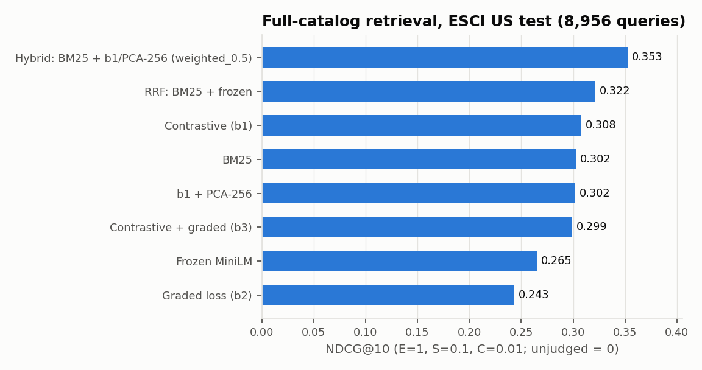
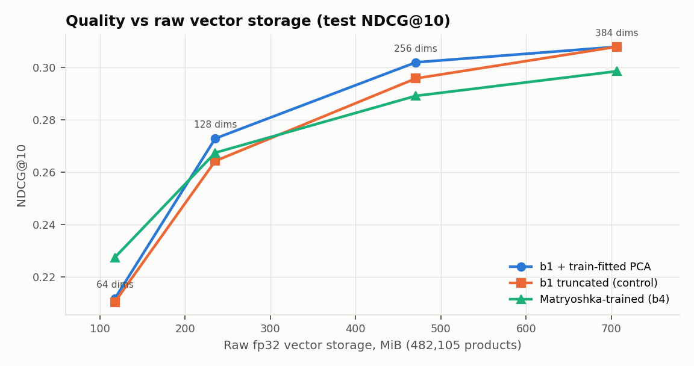
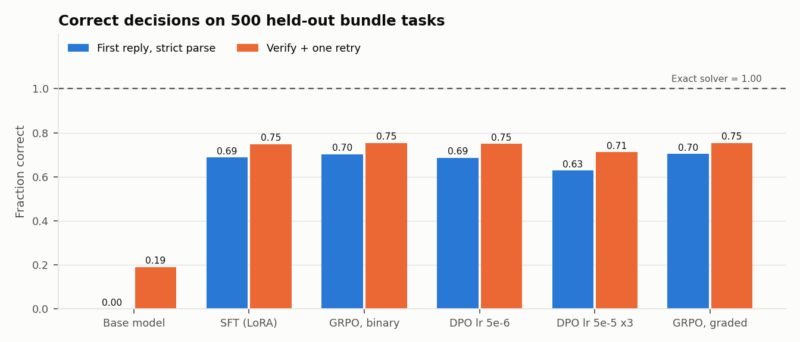
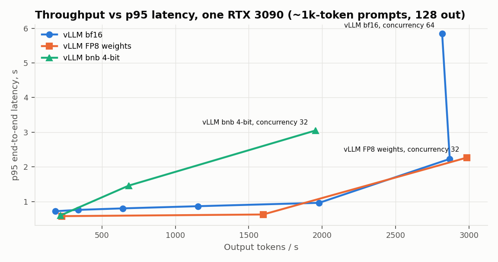

A shopping assistant that never shows an unverified answer
Ask “a quiet wireless keyboard and mouse under $100, only available products.” Cartograph retrieves candidates with a fine-tuned hybrid search, reads point-in-time price and stock from a feature store, lets a fine-tuned 1.5B LLM pick a bundle, and checks every selection (real product, in stock, one per category, exact total, within budget) before anyone sees it. Every number on this page comes from a committed, reproducible experiment, including the ones that failed.
Retrieve → read live features → generate → verify
Median server time per stage, measured over 500 served requests on one RTX 3090. The LLM is almost all of it.
Why a verifier, not just a better model
The fine-tuned model is right about 7 times in 10. Its errors are mostly arithmetic (totals that don't add up, bundles over budget). Instead of trusting it, every answer is checked against live features; failures get one retry with the verifier's errors and are otherwise withheld. Result: no unverified bundle is ever shown, and refusals come with reasons.
Fails closed
- Feature snapshot older than 6 h → “features too old”; no price or stock claims made.
- Redis unreachable → HTTP 503; prices are never invented.
- GPU replica killed → Ray Serve restarts it; 0 of 60 requests failed.
- Every response carries a trace: release, model, feature snapshot, evidence IDs, verifier result, stage timings.
Data, models, and serving: one connected system
Leakage rules: ESCI's official test split is never used for training, negative mining, PCA fitting, or any tuning. Bundle-task products are split by hash, so train and test share none. Feature rows only become visible once they were actually available, so late data can't leak into history.
What was measured
1 · Search: a fine-tuned hybrid beats the keyword baseline by 17%


- Contrastive fine-tuning with query-aware negatives: 0.265 → 0.308. A graded E>S>C>I loss hurt (0.244), a negative result.
- Hybrid (BM25 + encoder, weighted fusion chosen on dev): 0.353. Qdrant HNSW at ef=32: 95% top-10 agreement with exact search, 3.7 ms p95.
2 · Feature platform: zero leaks, zero mismatches
| Check | Result |
|---|---|
| Feast historical values vs an independent point-in-time reference | 5,001 / 5,001 match |
| Naive event-time join (what a careless pipeline would do) | would leak late data in 53 samples |
| Late-arriving batch rewrites earlier history | never (2,981 / 2,981 unchanged) |
| Online (Redis) vs offline values | 0 mismatches (2,000 products × 8 features) |
| Replay a batch / kill a Ray worker mid-task | 0 duplicates / retried, output identical to reference |
| Redis down | fails closed, no values served |
Evidence → Four failed runs are kept; two exposed real Feast behavior with expired features.
3 · Assistant: fine-tuning did the heavy lifting; RL-style alignment didn't help

- Base Qwen2.5-1.5B: 0% (it wraps JSON in code fences, then refuses almost everything). After LoRA SFT: 69%, 75% with verify-and-retry.
- GRPO with a pass/fail verifier reward learned to game it: picked valid but worse bundles (optimal 83% → 59%). A graded reward fixed that. Neither moved correctness significantly.
- DPO on verifier-labeled pairs: no effect at a gentle setting; −6 points when trained harder (overfit). Honest negative results.
4 · Serving on one RTX 3090

- 53× throughput over sequential Transformers (2,869 vs 54 output tok/s); per-token decode 5.2 vs 17.8 ms.
- Prefix caching: 3.6× faster first token on repeated prompts; 1.75× throughput on shared long prefixes.
- FP8 weights: −42% weight memory, +23–38% decode speed, −1.4 to −1.8 points of correctness. 4-bit: −10 points raw.
- Batching cuts GPU energy per request 18× (66.9 → 3.7 mWh); the card runs at its ~350 W cap either way.
- Ray Serve on top of vLLM: same per-token speed, −11% peak throughput.
5 · Governance: bad releases blocked, rollbacks exact
- Release manifests bind data, feature snapshots, index, model weights, verifier code, and every dependency lock by checksum.
- 3,481 / 3,481 adversarial answers rejected (fabricated IDs, duplicates, false totals, out-of-stock swaps, over-budget, format-only).
- A 64-dim index release was rejected by the gate (−30% quality). After a rollback, saved requests replayed with identical trace digests.
What didn't work, and what isn't done
Failures kept on the record
- GPU 0 fell off the PCIe bus twice under dual-GPU load (probably power), so everything ran on one card.
- Several of my own bugs, each caught, fixed, and kept with notes: timestamp precision, a stalled Ray shuffle, two Feast lookup issues, silent truncation in SFT, GRPO, DPO, and the reward model, a request parser that cut live accuracy from 82% to 63%, and a fusion-parameter bug.
- A memory-saving claim for Qdrant that didn't hold across builds was withdrawn.
- Search ranks by titles, so “microphone” once returned a children's karaoke machine; “quiet” is never actually verified.
- Product categories come from title keywords, so they're crude: a baby movement monitor counts as a “monitor”, and one wireless mouse was filed as a mouse pad. The verifier enforces categories exactly, so bad labels lead to odd but rule-valid bundles.
Not done (and why)
| Human-feedback RL | Ready | needs owner preference labels |
| Two-GPU tensor parallelism | Blocked | GPU 0 unsafe; cloud plan written |
| Kubernetes (KubeRay) | Ready | manifests + drill; not yet run |
| Cloud experiment | Planned | no account / budget |
Prices, stock, clicks, and bundle tasks are synthetic; no revenue or conversion claims follow.
Stack and reproducibility
Python 3.11 · PyTorch · Sentence Transformers · Qdrant · Ray Data · Apache Iceberg · Feast · Redis · TRL + PEFT (SFT, DPO, GRPO) · vLLM · Ray Serve · KubeRay manifests. Every experiment directory stores its config, environment lock, manifest (code commit, input checksums, hardware, command), metrics, per-example outputs, and raw logs.